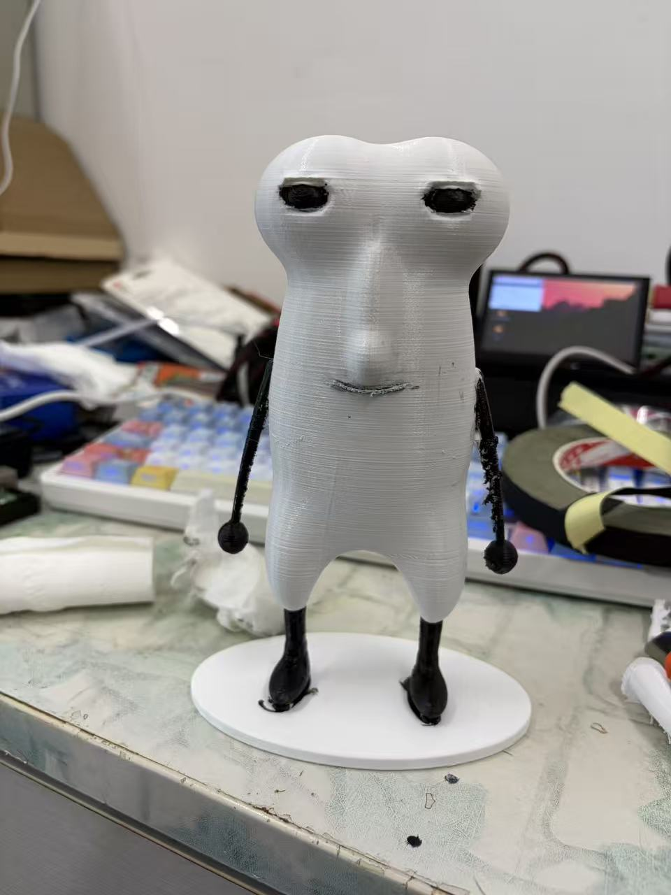
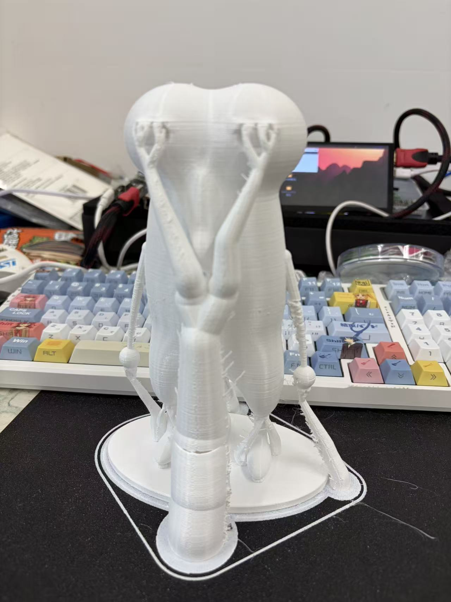

MODEL
准备模型
准备修复后的难鱼 STL 模型，导入切片软件。本次使用带底座版本；导入后确认尺寸和摆放方向，让底座平放在打印平台上。
STL 只保存形状，不保存黑白材质。本次先用单色耗材打印，之后手工上色。
从屏幕里的角色，到桌上的小伙伴
一份亲手完成的 3D 打印记录。用 PETG 打出轮廓，再用颜料、胶带和一点耐心，让难鱼站在桌面上。
耗材和用时为这次制作的参考值；模型尺寸、支撑和切片参数不同，实际结果会变化。
开始制作
FILES & PROJECT
轻量化修复版，毫米单位。角色约 150 mm，含底座总高约 153.5 mm。
下载 STL ↓ BLENDER / 可编辑工程保留高精度修复网格、材质和预览场景，可用 Blender 打开。
下载工程 ↓ ZIP / 原始模型备份难鱼原始 STL、高精度带底座修复版，以及尚未修复的 DBH 原始人物模型。
下载模型合集 ↓ ZIP / 项目源码当前游戏项目的已提交源码快照。提取与修复脚本、检查报告一并放在 project 目录。
下载源码 ↓打印文件已检查：一个连通实体，开放边与非流形边均为 0。推荐文件为整理时生成的轻量版；本次实打所用高精度版保留在模型合集中。仍需在切片软件中检查支撑和逐层预览。DBH 原始模型不建议直接打印。
BEFORE YOU START
打印难鱼模型文件、切片软件、3D 打印机、PETG 耗材
后处理剪钳、打磨工具或砂纸、电烙铁
装饰与固定丙烯颜料、画笔、黑色布基胶带、黑胶
THE PROCESS
MODEL
准备修复后的难鱼 STL 模型，导入切片软件。本次使用带底座版本；导入后确认尺寸和摆放方向，让底座平放在打印平台上。
STL 只保存形状，不保存黑白材质。本次先用单色耗材打印，之后手工上色。
SLICE & PRINT
根据打印机与 PETG 耗材设置切片参数，为手臂、手部、下巴等悬垂区域安排支撑。切片后先查看逐层预览，确认模型和支撑完整，再开始打印。
打印完成后，等模型和平台冷却，再取下模型。

CLEAN UP & REPAIR
用剪钳分段拆除支撑，清理底座周围的附着结构。靠近眼睛、手臂和脚踝时，一手扶住模型，一手剪断连接点，避免直接拉扯细小部件。
打磨支撑接触点、毛刺和明显的表面凸起。容易断裂或已经开裂的位置，用电烙铁局部热熔修复，待冷却后再修整。
电烙铁先在废支撑上试一下，短时、轻触操作，避免烫塌外形；在通风处处理，不用手触碰烙铁头或未冷却的塑料。
ACRYLIC PAINT
清理打磨产生的粉尘，确认表面干燥后，用丙烯颜料给角色上色。按照成品的黑白配色，重点处理眼睛、嘴线、手臂、手部以及小腿和鞋子。
薄涂多次，逐层等干，避免厚涂遮住五官细节。涂黑时注意边缘，尽量不要蹭到白色身体和底座。
DETAIL FINISHING
等丙烯颜料干透，将黑色布基胶带裁成适合的窄条或小片，用于需要修整的黑色部位，整理边缘并遮住不够整齐的位置。
贴好后轻轻压实，剪掉多余部分，避免胶带盖住五官或改变原有轮廓。
FINAL ASSEMBLY
最后在脚与底座连接处打上黑胶，补强固定。控制胶量，整理外溢的胶，让底座保持干净。
按照所用胶的说明等待固化，期间保持模型稳定。固化后检查脚部是否牢固，清理残留，就可以摆上桌面了。
“黑胶”沿用本次制作的称呼；选择能粘接 PETG 和底座的胶，固化时间以产品说明为准。
HELLO, REAL WORLD.
打印给它形状，手工给它表情。保留下来的层纹和修整痕迹，也是这次制作的一部分。
本次实拍成品 · PETG 打印 / 丙烯上色 / 手工修整
回看制作步骤 ↑